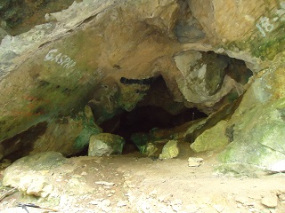
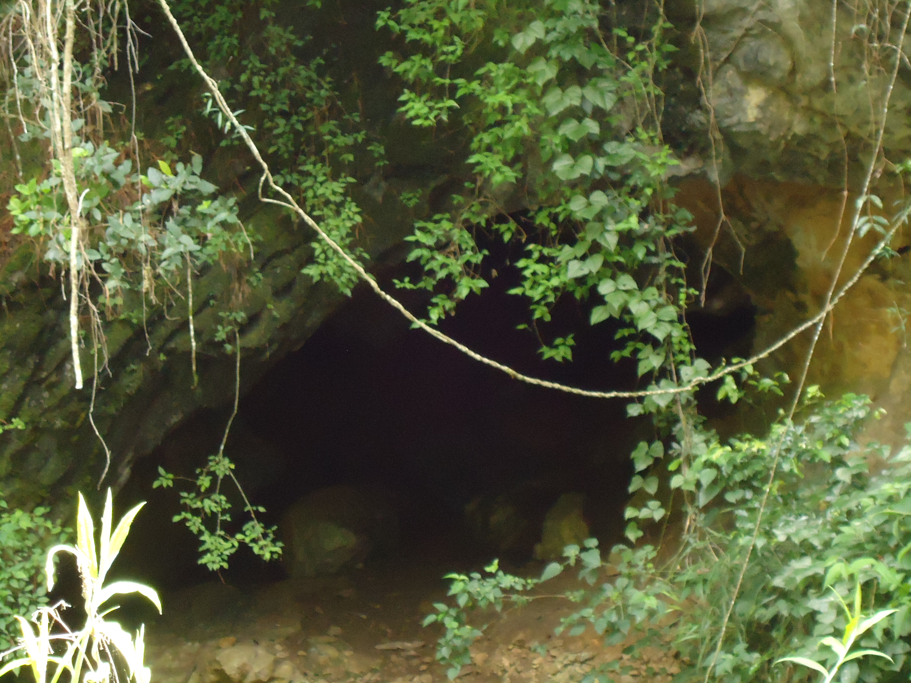
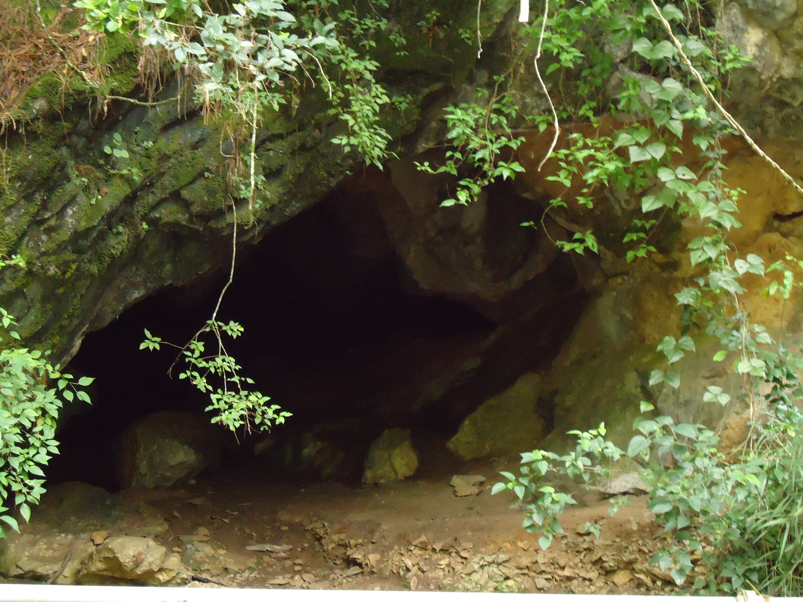
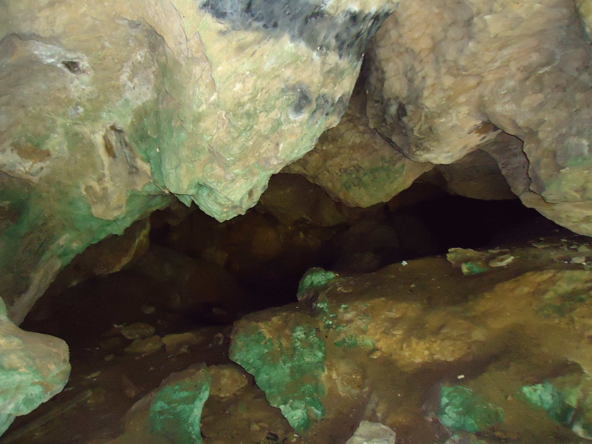
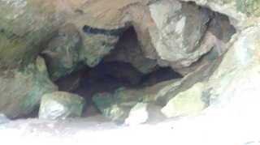

Pertenece al municipio de Jitotol, Chiapas, se encuentra en el tramo carretero Jitotol-Pueblo Nuevo Solistahuacan. El lugar principal se encuentra en un puente del mismo nombre, ahí se pueden estacionar vehículos, ya que muchas personas llegan al lugar.
Se encuentra rodeado de extensa vegetación y un clima fresco. Cabe mencionar que debido a la deforestación que ocurre a los alrededores del rio, el afluente de este ha disminuido dramáticamente, por lo que para realizar actividades de natación, solo se puede realizar en temporada de lluvias.
La profundidad de las cuevas aun sigue sin ser exacta ya que quienes han entrado no llevan equipo para exploración, los únicos datos que existen son que caminando alrededor de 7 km la cueva se divide en dos, y que más adelante (no especifican que túnel tomar) se vuelve a dividir, teniendo 3 caminos distintos y que uno de estos (esto es un relato de quien entro) se puede llegar a Jitotol, Chiapas.
En Pueblo Nuevo Solistahuacan, hay transporte que los pueden llevar al lugar, ya sea en la modalidad de urban, taxi o en camionetas. Como se trata de tramo federal, regularmente el camino se encuentra en buen estado, y es posible transportarse en cualquier tipo de vehículo.
Se encuentra en el municipio de Jitotol, a 9 km del centro, y a 8 km del municipio de Pueblo Nuevo Solistahuacan.
Ya sea por Jitotol o Pueblo Nuevo Solistahuacan, se toma la carretera federal 195 tramo Jitotol-Pueblo Nuevo Solistahuacan.
Si se encuentra en Jitotol, se puede tomar como referencia el arco o entrada principal, tomar el tramo antes mencionado, y avanzar con dirección a Pueblo Nuevo 9 kms, hasta llegar al puente del mismo nombre.
Si se encuentra en Pueblo Nuevo Solistahuacan, se puede ir a la parada de taxis Pueblo Nuevo-Mochil (cerca de ahí están las instalaciones de la antigua biblioteca), y tomar el tramo carretero Pueblo Nuevo-Jitotol, y recorrer aproximadamente 8 kms hasta llegar al puente Rio Hondo.
En el lugar usted puede practicar actividades como:





posicione el mouse o de click sobre las imágenes
{kind=link}
{kind=link}
{kind=link}
{kind=link}
{kind=link}